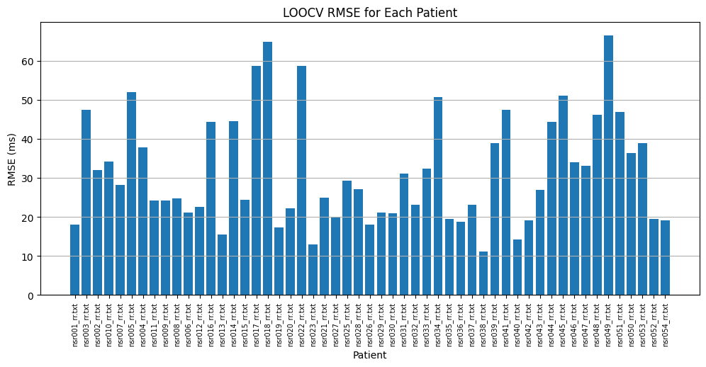
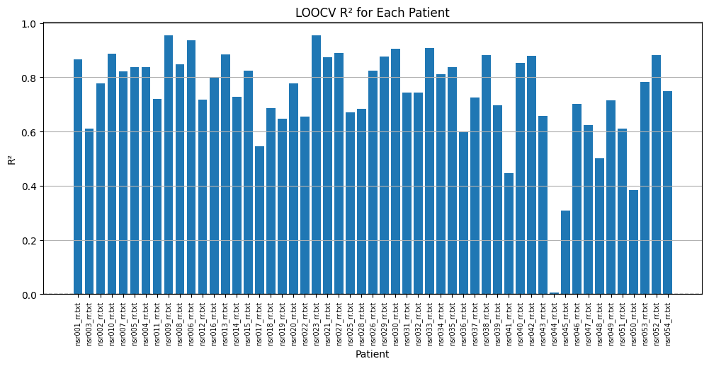

← Back to project overview
Results Dashboard
Model Performance
Full results from CNN and LSTM model training, evaluation, and synthetic HRV generation across 54 healthy patients.
CNN — Mean RMSE
30.29
ms · best performer
CNN — Mean MAE
18.54
ms
LSTM — Mean RMSE
137.82
ms
Patients evaluated
54
healthy individuals
Mean RMSE comparison
Lower is better — milliseconds
CNN error breakdown
RMSE vs MAE performance
CNN wins
The CNN outperformed the LSTM with 4.5× lower RMSE (30.29 ms vs 137.82 ms), delivering more consistent and stable predictions across all 54 patients — making it the stronger baseline model for future neurological disease detection.
CNN model
Convolutional Neural Network results
K-Fold cross-validation results, per-patient error breakdown, and model prediction output.

CNN model result

CNN K-Fold cross-validation result

CNN error result

CNN RMSE error

CNN R² error
LSTM model
Long Short-Term Memory results
Actual vs predicted RR intervals, training loss, signal distributions, and real patient signal comparisons.

Actual vs predicted RR intervals

Next beat prediction

RR interval distribution

Real patient RR signals

Training loss & model error